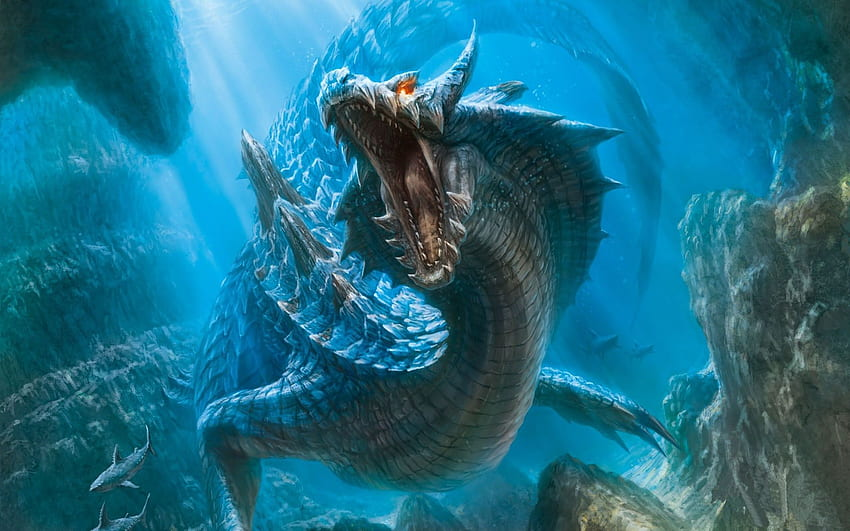

El Guardian de Atlantis
Primer encuentro: Escritos de la antigua grecia
Ultimo encuentro: 05/17/2023
Contencion: Libre
Nv de peligro:3 (Neutral)
Estado Actual: Vivo
["El oceano es uno de los mas grandes misterios de nuestro mundo y era obvio que dentro de este existirian criaturas o entidades que lo habiten sin que nos demos cuenta.
Ese es el caso de la entidad n.º013, a la cual se le apodo como el guardian de atlantis, esto debido a su cercania con la supuesta ubicacion de la atlantida.
Se desconoce si este tiene alguna relacion con dicha ciudad, pero lo mas probable es que si, pues este solo ataca de forma activa cuando se intenta tomar cosas o se daña la ciudad.
Si bien el primer encuentro de la organizacion con 013 fue en el año 2002 al intentar obtener informacion de la entidad n.º005 se termino por encontrar a 013 en condiciones
criticas pues este habia peleado con el 005 casi a muerte, los agentes de la unidad WHALE lograron salvarlo e incluso se logro entablar comunicacion con este, logrando
descubri el por que su pelea con el 005 y fue el intento de destruir parte de las ruinas de la ciudad de atlantis, gracias a esta informacion es que la organizacion creo una unidad
exclusiva para la proteccion, mantenimiento y apoyo tanto para la vieja ciudad y el 013 llamada SHARK"]